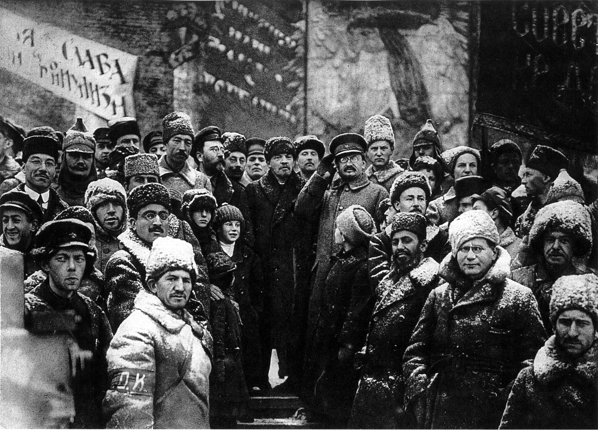
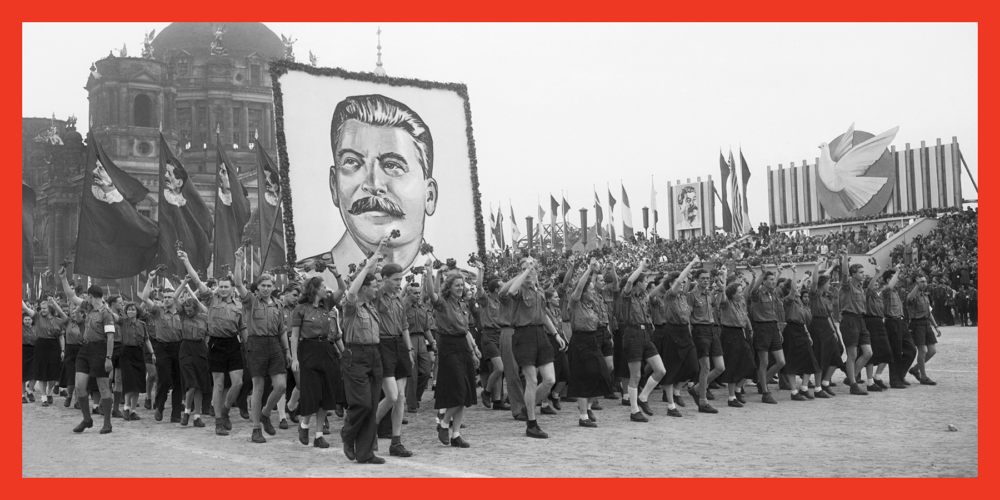

Modern revolutionary activity in the Russian Empire began with the 1825 Decembrist revolt. Although serfdom was abolished in 1861, it was done on terms unfavorable to the peasants and served to encourage revolutionaries. A parliament—the State Duma—was established in 1906 after the Russian Revolution of 1905, but Tsar Nicholas II resisted attempts to move from absolute to a constitutional monarchy. Social unrest continued and was aggravated during World War I by military defeat and food shortages in major cities.
A spontaneous popular uprising in Petrograd, in response to the wartime decay of Russia's economy and morale, culminated in the February Revolution and the toppling of Nicholas II and the imperial government in March 1917. The tsarist autocracy was replaced by the Russian Provisional Government, which intended to conduct elections to the Russian Constituent Assembly and to continue fighting on the side of the Entente in World War I.
At the same time, workers' councils, known in Russian as "Soviets", sprang up across the country. The Bolsheviks, led by Vladimir Lenin, pushed for socialist revolution in the Soviets and on the streets. On 7 November 1917, the Red Guards stormed the Winter Palace in Petrograd, ending the rule of the Provisional Government and leaving all political power to the Soviets.This event would later be officially known in Soviet bibliographies as the Great October Socialist Revolution. In December, the Bolsheviks signed an armistice with the Central Powers, though by February 1918, fighting had resumed. In March, the Soviets ended involvement in the war and signed the Treaty of Brest-Litovsk.
A long and bloody Civil War ensued between the Reds and the Whites, starting in 1917 and ending in 1923 with the Reds' victory. It included foreign intervention, the execution of the former tsar and his family, and the famine of 1921, which killed about five million people.In March 1921, during a related conflict with Poland, the Peace of Riga was signed, splitting disputed territories in Belarus and Ukraine between the Republic of Poland and Soviet Russia. Soviet Russia had to resolve similar conflicts with the newly established republics of Estonia, Finland, Latvia, and Lithuania.
On 28 December 1922, a conference of plenipotentiary delegations from the Russian SFSR, the Transcaucasian SFSR, the Ukrainian SSR and the Byelorussian SSR approved the Treaty on the Creation of the USSR[23] and the Declaration of the Creation of the USSR, forming the Union of Soviet Socialist Republics.These two documents were confirmed by the first Congress of Soviets of the USSR and signed by the heads of the delegations,Mikhail Kalinin, Mikhail Tskhakaya, Mikhail Frunze, Grigory Petrovsky, and Alexander Chervyakov,on 30 December 1922. The formal proclamation was made from the stage of the Bolshoi Theatre.
An intensive restructuring of the economy, industry and politics of the country began in the early days of Soviet power in 1917. A large part of this was done according to the Bolshevik Initial Decrees, government documents signed by Vladimir Lenin. One of the most prominent breakthroughs was the GOELRO plan, which envisioned a major restructuring of the Soviet economy based on total electrification of the country.The plan became the prototype for subsequent Five-Year Plans and was fulfilled by 1931.After the economic policy of "War communism" during the Russian Civil War, as a prelude to fully developing socialism in the country, the Soviet government permitted some private enterprise to coexist alongside nationalized industry in the 1920s, and total food requisition in the countryside was replaced by a food tax.
From its creation, the government in the Soviet Union was based on the one-party rule of the Communist Party (Bolsheviks).[p] The stated purpose was to prevent the return of capitalist exploitation, and that the principles of democratic centralism would be the most effective in representing the people's will in a practical manner. The debate over the future of the economy provided the background for a power struggle in the years after Lenin's death in 1924. Initially, Lenin was to be replaced by a "troika" consisting of Grigory Zinoviev of the Ukrainian SSR, Lev Kamenev of the Russian SFSR, and Joseph Stalin of the Transcaucasian SFSR.On 1 February 1924, the USSR was recognized by the United Kingdom. The same year, a Soviet Constitution was approved, legitimizing the December 1922 union.
According to Archie Brown the constitution was never an accurate guide to political reality in the USSR. For example the fact that the Party played the leading role in making and enforcing policy was not mentioned in it until 1977.The USSR was a federative entity of many constituent republics, each with its own political and administrative entities. However, the term "Soviet Russia" – strictly applicable only to the Russian Federative Socialist Republic – was often applied to the entire country by non-Soviet writers.
On 3 April 1922, Stalin was named the General Secretary of the Communist Party of the Soviet Union. Lenin had appointed Stalin the head of the Workers' and Peasants' Inspectorate, which gave Stalin considerable power. By gradually consolidating his influence and isolating and outmaneuvering his rivals within the party, Stalin became the undisputed leader of the country and, by the end of the 1920s, established a totalitarian rule. In October 1927, Zinoviev and Leon Trotsky were expelled from the Central Committee and forced into exile.
In 1928, Stalin introduced the first five-year plan for building a socialist economy. In place of the internationalism expressed by Lenin throughout the Revolution, it aimed to build Socialism in One Country. In industry, the state assumed control over all existing enterprises and undertook an intensive program of industrialization. In agriculture, rather than adhering to the "lead by example" policy advocated by Lenin,forced collectivization of farms was implemented all over the country.
Famines ensued as a result, causing deaths estimated at three to seven million; surviving kulaks were persecuted, and many were sent to Gulags to do forced labor.[33][34] Social upheaval continued in the mid-1930s. Despite the turmoil of the mid-to-late 1930s, the country developed a robust industrial economy in the years preceding World War II.
Construction of the bridge through the Kolyma (part of the Road of Bones from Magadan to Jakutsk) by the workers of Dalstroy.
Closer cooperation between the USSR and the West developed in the early 1930s. From 1932 to 1934, the country participated in the World Disarmament Conference. In 1933, diplomatic relations between the United States and the USSR were established when in November, the newly elected President of the United States, Franklin D. Roosevelt, chose to recognize Stalin's Communist government formally and negotiated a new trade agreement between the two countries.In September 1934, the country joined the League of Nations. After the Spanish Civil War broke out in 1936, the USSR actively supported the Republican forces against the Nationalists, who were supported by Fascist Italy and Nazi Germany.
Five Marshals of the Soviet Union in 1935. Only two of them – Budyonny and Voroshilov – survived Great Purge. Blyukher, Yegorov and Tukhachevsky were executed.
In December 1936, Stalin unveiled a new constitution that was praised by supporters around the world as the most democratic constitution imaginable, though there was some skepticism.Stalin's Great Purge resulted in the detainment or execution of many "Old Bolsheviks" who had participated in the October Revolution with Lenin. According to declassified Soviet archives, the NKVD arrested more than one and a half million people in 1937 and 1938, of whom 681,692 were shot.Over those two years, there were an average of over one thousand executions a day.
In 1939, after attempts to form a military alliance with Britain and France against Germany failed, the Soviet Union made a dramatic shift towards Nazi Germany. Almost a year after Britain and France had concluded the Munich Agreement with Germany, the Soviet Union made agreements with Germany as well, both militarily and economically during extensive talks. The two countries concluded the Molotov–Ribbentrop Pact and the German–Soviet Commercial Agreement in August 1939. The former made possible the Soviet occupation of Lithuania, Latvia, Estonia, Bessarabia, northern Bukovina, and eastern Poland, while the Soviets remained formally neutral. In late November, unable to coerce the Republic of Finland by diplomatic means into moving its border 25 kilometres (16 mi) back from Leningrad, Stalin ordered the invasion of Finland. On 14 December 1939 the Soviet Union was expelled from League of Nations for invading Finland.In the east, the Soviet military won several decisive victories during border clashes with the Empire of Japan in 1938 and 1939. However, in April 1941, the USSR signed the Soviet–Japanese Neutrality Pact with Japan, recognizing the territorial integrity of Manchukuo, a Japanese puppet state.
Two developments dominated the decade that followed: the increasingly apparent crumbling of the Soviet Union's economic and political structures, and the patchwork attempts at reforms to reverse that process. Kenneth S. Deffeyes argued in Beyond Oil that the Reagan administration encouraged Saudi Arabia to lower the price of oil to the point where the Soviets could not make a profit selling their oil, and resulted in the depletion of the country's hard currency reserves.
Brezhnev's next two successors, transitional figures with deep roots in his tradition, did not last long. Yuri Andropov was 68 years old and Konstantin Chernenko 72 when they assumed power; both died in less than two years. In an attempt to avoid a third short-lived leader, in 1985, the Soviets turned to the next generation and selected Mikhail Gorbachev. He made significant changes in the economy and party leadership, called perestroika. His policy of glasnost freed public access to information after decades of heavy government censorship. Gorbachev also moved to end the Cold War. In 1988, the USSR abandoned its war in Afghanistan and began to withdraw its forces. In the following year, Gorbachev refused to interfere in the internal affairs of the Soviet satellite states, which paved the way for the Revolutions of 1989. In particular, the standstill of the Soviet Union at the Pan-European Picnic in August 1989 then set a peaceful chain reaction in motion at the end of which the Eastern Bloc collapsed. With the tearing down of the Berlin Wall and with East and West Germany pursuing unification, the Iron Curtain between the West and Soviet-controlled regions came down. 
At the same time, the Soviet republics started legal moves towards potentially declaring sovereignty over their territories, citing the freedom to secede in Article 72 of the USSR constitution.On 7 April 1990, a law was passed allowing a republic to secede if more than two-thirds of its residents voted for it in a referendum.Many held their first free elections in the Soviet era for their own national legislatures in 1990. Many of these legislatures proceeded to produce legislation contradicting the Union laws in what was known as the "War of Laws". In 1989, the Russian SFSR convened a newly elected Congress of People's Deputies. Boris Yeltsin was elected its chairman. On 12 June 1990, the Congress declared Russia's sovereignty over its territory and proceeded to pass laws that attempted to supersede some of the Soviet laws. After a landslide victory of Sąjūdis in Lithuania, that country declared its independence restored on 11 March 1990.
A referendum for the preservation of the USSR was held on 17 March 1991 in nine republics (the remainder having boycotted the vote), with the majority of the population in those republics voting for preservation of the Union. The referendum gave Gorbachev a minor boost. In the summer of 1991, the New Union Treaty, which would have turned the country into a much looser Union, was agreed upon by eight republics. The signing of the treaty, however, was interrupted by the August Coup—an attempted coup d'état by hardline members of the government and the KGB who sought to reverse Gorbachev's reforms and reassert the central government's control over the republics. After the coup collapsed, Yeltsin was seen as a hero for his decisive actions, while Gorbachev's power was effectively ended. The balance of power tipped significantly towards the republics. In August 1991, Latvia and Estonia immediately declared the restoration of their full independence (following Lithuania's 1990 example). Gorbachev resigned as general secretary in late August, and soon afterwards, the party's activities were indefinitely suspended—effectively ending its rule. By the fall, Gorbachev could no longer influence events outside Moscow, and he was being challenged even there by Yeltsin, who had been elected President of Russia in July 1991.
Germany broke the Molotov–Ribbentrop Pact and invaded the Soviet Union on 22 June 1941 starting what was known in the USSR as the Great Patriotic War. The Red Army stopped the seemingly invincible German Army at the Battle of Moscow. The Battle of Stalingrad, which lasted from late 1942 to early 1943, dealt a severe blow to Germany from which they never fully recovered and became a turning point in the war. After Stalingrad, Soviet forces drove through Eastern Europe to Berlin before Germany surrendered in 1945. The German Army suffered 80% of its military deaths in the Eastern Front.Harry Hopkins, a close foreign policy advisor to Franklin D. Roosevelt, spoke on 10 August 1943 of the USSR's decisive role in the war.
From left to right, the Soviet General Secretary Joseph Stalin, US President Franklin D. Roosevelt and British Prime Minister Winston Churchill confer in Tehran, 1943.
In the same year, the USSR, in fulfilment of its agreement with the Allies at the Yalta Conference, denounced the Soviet–Japanese Neutrality Pact in April 1945[46] and invaded Manchukuo and other Japan-controlled territories on 9 August 1945.This conflict ended with a decisive Soviet victory, contributing to the unconditional surrender of Japan and the end of World War II.
The USSR suffered greatly in the war, losing around 27 million people.Approximately 2.8 million Soviet POWs died of starvation, mistreatment, or executions in just eight months of 1941–42.During the war, the country together with the United States, the United Kingdom and China were considered the Big Four Allied powers,and later became the Four Policemen that formed the basis of the United Nations Security Council.It emerged as a superpower in the post-war period. Once denied diplomatic recognition by the Western world, the USSR had official relations with practically every country by the late 1940s. A member of the United Nations at its foundation in 1945, the country became one of the five permanent members of the United Nations Security Council, which gave it the right to veto any of its resolutions.
During the immediate post-war period, the Soviet Union rebuilt and expanded its economy, while maintaining its strictly centralized control. It took effective control over most of the countries of Eastern Europe (except Yugoslavia and later Albania), turning them into satellite states. The USSR bound its satellite states in a military alliance, the Warsaw Pact, in 1955, and an economic organization, Council for Mutual Economic Assistance or Comecon, a counterpart to the European Economic Community (EEC), from 1949 to 1991.The USSR concentrated on its own recovery, seizing and transferring most of Germany's industrial plants, and it exacted war reparations from East Germany, Hungary, Romania, and Bulgaria using Soviet-dominated joint enterprises. It also instituted trading arrangements deliberately designed to favor the country. Moscow controlled the Communist parties that ruled the satellite states, and they followed orders from the Kremlin.Later, the Comecon supplied aid to the eventually victorious Communist Party of China, and its influence grew elsewhere in the world. Fearing its ambitions, the Soviet Union's wartime allies, the United Kingdom and the United States, became its enemies. In the ensuing Cold War, the two sides

Ww2 From Soviet Pov |
Cold War From Soviet Pov |
|---|---|